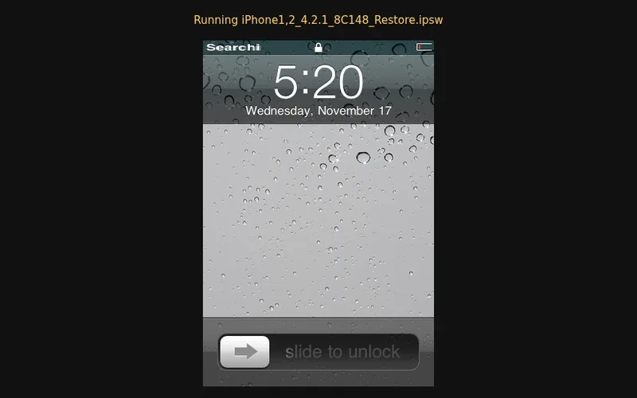
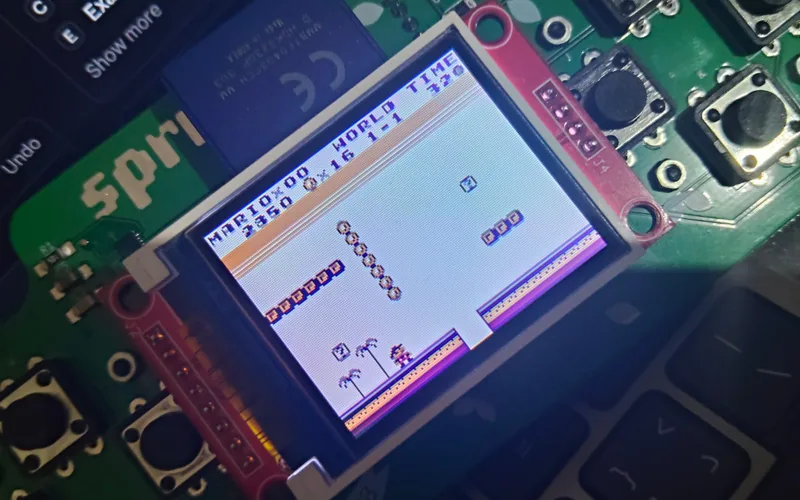
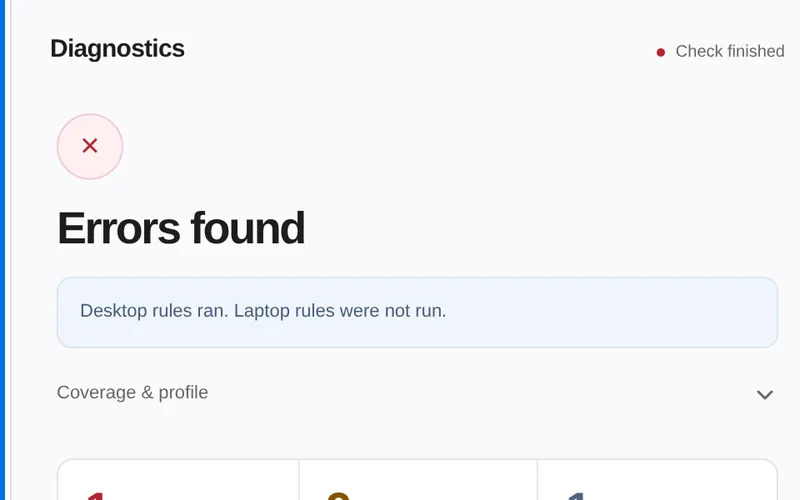
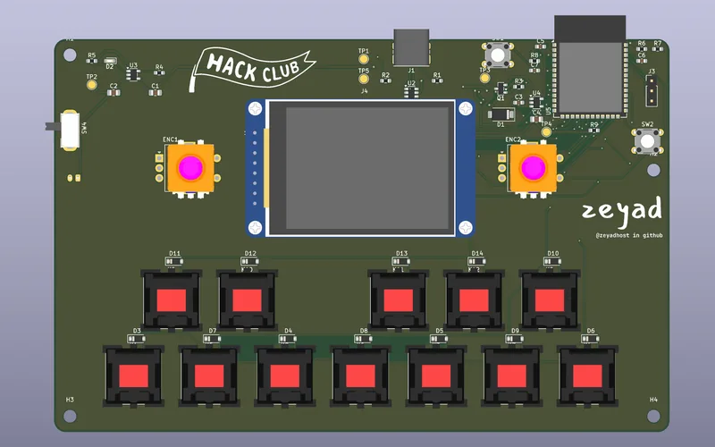
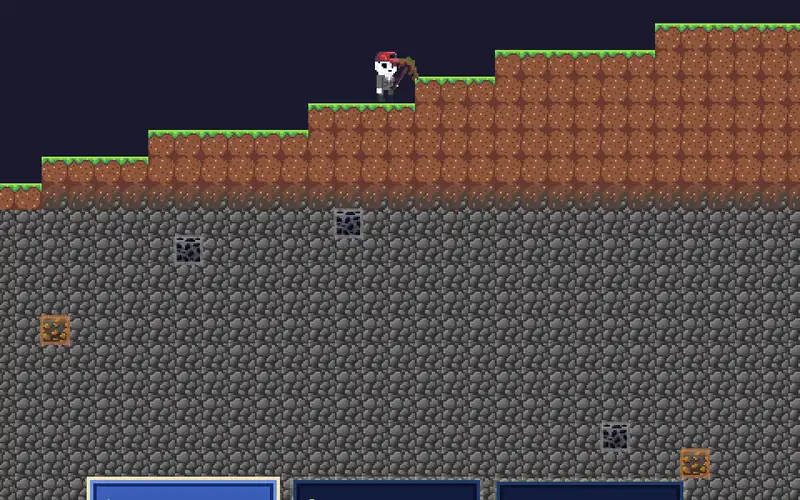
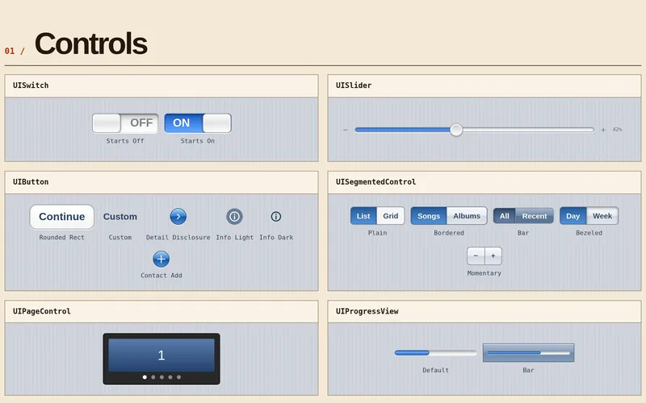

cupertab

a port of touchhle that runs in a web browser. it started as a fork of touchhle. early iphone apps run in a tab, and ios 4 boots from an ipsw you supply.
i'm zeyad, 1313.000000000000000000, from egypt. i build emulators and browser tools, and i design circuit boards.

a port of touchhle that runs in a web browser. it started as a fork of touchhle. early iphone apps run in a tab, and ios 4 boots from an ipsw you supply.

a game boy and game boy color emulator for the hack club sprig, written from scratch. blargg's cpu and timing tests pass on the real hardware.

checks an opencore config.plist against the hardware you pick, in the browser. the file never leaves your device.

a midi controller with 12 keys, 2 knobs and a screen, on one circuit board with no case. the design passes its checks, but the board is not built yet.

a singleplayer mining game for the browser, built with phaser 3 for ember jam. art by coolgirlarts.

an interactive web catalog of the ios 4.2.1 uikit controls, rebuilt in css, svg and javascript. it ships no apple binaries, artwork or fonts.
metal and a gpu-composited macos desktop on the meteor lake igpu of a dell latitude 5450, a gpu apple never wrote a driver for.
here i am, 7 years7.000000000000000000 later, still doing what i fell in love with at 6: computers. my father taught me my first technical terms and how to work with them, and i've kept teaching myself since then. computers and circuits are my comfort zone. they're my work and my hobby at the same time, and i love it. now i build hardware, full-stack tools and games.